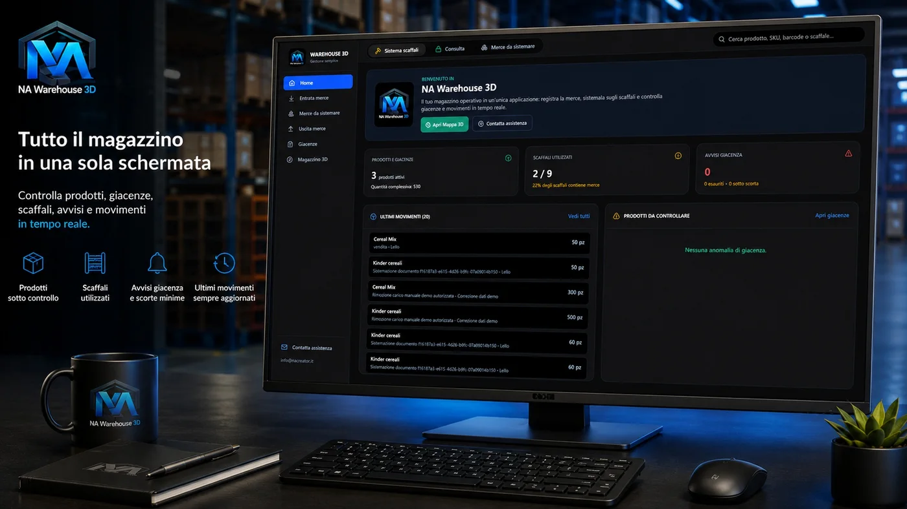
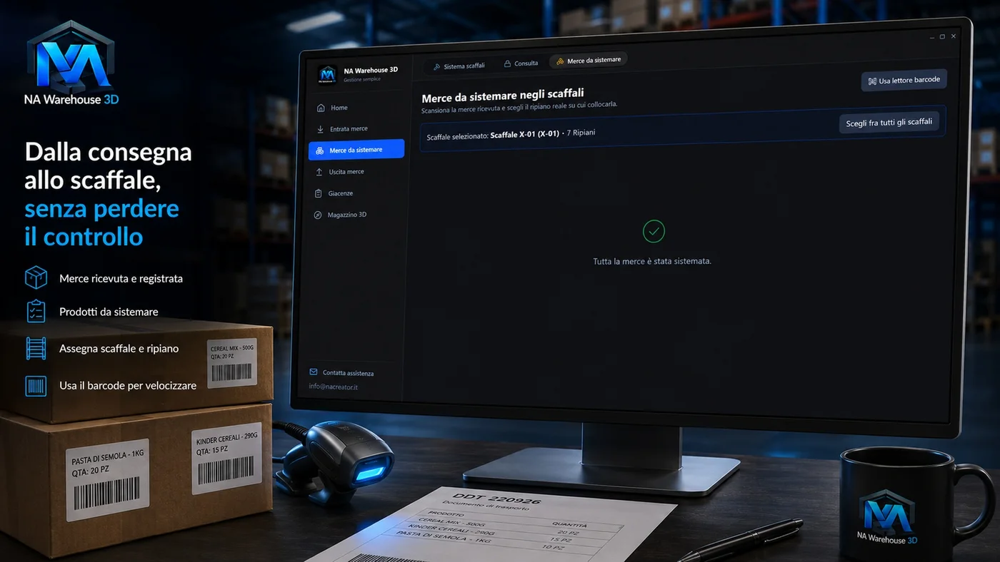
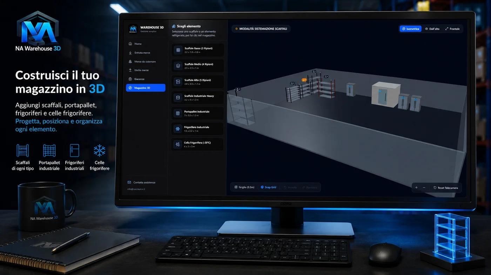
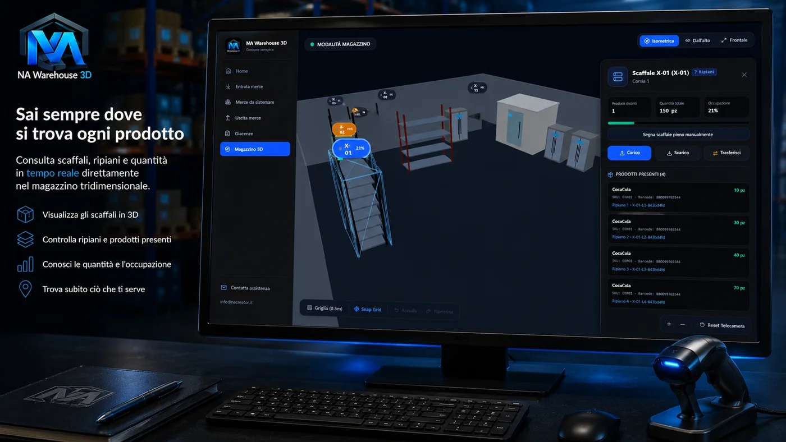
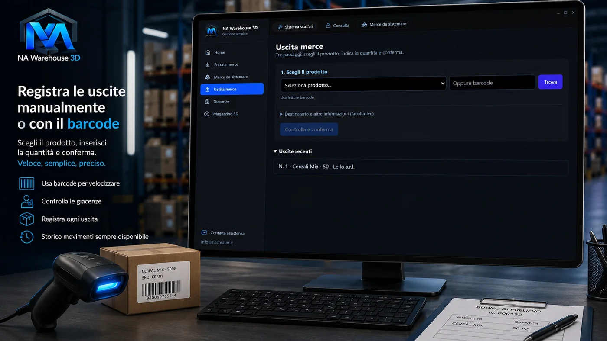
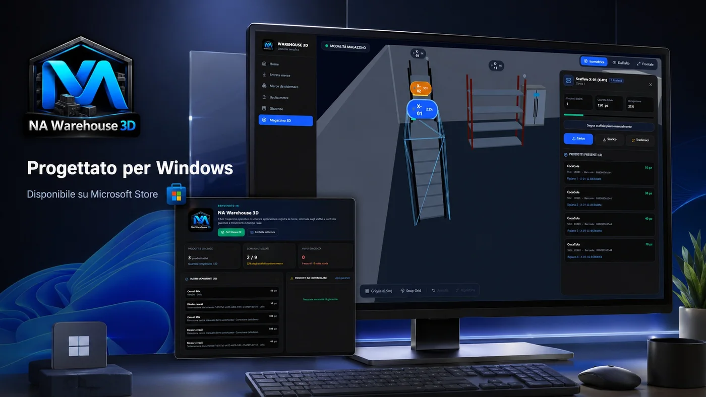

Gestire un magazzino non significa soltanto sapere quanti prodotti sono disponibili. Bisogna conoscere la provenienza della merce, registrare i documenti ricevuti, controllare le quantita', sapere dove sono stati sistemati gli articoli e registrare correttamente ogni uscita.
Quando queste informazioni vengono annotate su fogli, file separati o programmi diversi, diventa facile perdere il controllo della situazione. Un prodotto puo' risultare disponibile ma non essere rintracciabile, una consegna puo' essere registrata ma non ancora sistemata, un'uscita puo' essere fatta senza aggiornare subito le giacenze.
Per rendere queste operazioni piu' semplici nasce NA Warehouse 3D, il gestionale per Windows sviluppato da NA Creator e pensato per riunire registrazione merce, giacenze e organizzazione visuale del magazzino.
Che cos'e' NA Warehouse 3D
NA Warehouse 3D e' un'applicazione desktop dedicata alla gestione di prodotti, movimenti e posizioni di magazzino. Il programma permette di seguire il percorso della merce dal momento in cui viene ricevuta fino alla sua sistemazione sugli scaffali.
Dalla stessa applicazione e' possibile registrare documenti di entrata, aggiungere prodotti e quantita', indicare il fornitore, controllare la merce ancora da sistemare, scegliere scaffale e ripiano, consultare le giacenze, registrare le uscite e visualizzare il magazzino in 3D.

Una dashboard per controllare subito il magazzino
All'apertura del programma, la dashboard permette di ottenere una panoramica immediata della situazione senza entrare in molte sezioni diverse.
Prodotti attivi
Controlli rapidamente quanti articoli sono presenti nel sistema.
Giacenze e soglie
Vedi quantita' complessive, prodotti esauriti e articoli sotto soglia minima.
Movimenti recenti
Tieni sotto controllo entrate, uscite e operazioni eseguite nel magazzino.
Merce da sistemare
Individui subito gli articoli ricevuti ma non ancora collocati.
Registrare la merce in entrata
La sezione Entrata merce e' dedicata alla registrazione dei prodotti ricevuti. L'utente puo' creare una nuova entrata indicando fornitore, numero del DDT, data del documento, prodotti ricevuti, quantita' ed eventuale codice utilizzato dal fornitore.
Ogni documento puo' contenere piu' prodotti. Una volta confermata l'entrata, le quantita' vengono registrate nel sistema e la merce passa nella sezione dedicata agli articoli da sistemare.

La merce da sistemare negli scaffali
Dopo la registrazione di un'entrata, i prodotti vengono mostrati nella sezione Merce da sistemare. Questa schermata contiene gli articoli ricevuti che non sono ancora stati assegnati a uno scaffale o a un ripiano.
L'utente puo' selezionare il prodotto, controllare la quantita' ricevuta, scegliere lo scaffale, indicare il ripiano e confermare la sistemazione.
Un magazzino visualizzato in 3D
Una delle caratteristiche principali dell'applicazione e' la rappresentazione tridimensionale del magazzino. All'interno della sezione Magazzino 3D, l'utente puo' costruire una versione visuale del proprio deposito aggiungendo scaffali, portapallet, frigoriferi, celle frigorifere e altre strutture di deposito.
Ogni elemento viene posizionato nello spazio tridimensionale e puo' essere associato a un codice identificativo. La mappa 3D non e' soltanto decorativa: serve a rappresentare in modo piu' intuitivo la posizione reale dei prodotti.


Consulta scaffali, ripiani e quantita
Selezionando uno scaffale all'interno del magazzino 3D e' possibile aprire un pannello con codice dello scaffale, numero dei ripiani, prodotti presenti, quantita' complessiva, percentuale di occupazione e quantita' presente su ogni ripiano.
L'utente puo' sapere non soltanto quante unita' di un prodotto sono disponibili, ma anche dove si trovano fisicamente.
Registrare la merce in uscita
La sezione Uscita merce permette di registrare rapidamente i prodotti che lasciano il magazzino. L'operazione puo' essere eseguita selezionando il prodotto dall'elenco oppure inserendo il relativo codice a barre.
Prima della conferma, il programma controlla la disponibilita' del prodotto. Una volta completata l'operazione, la quantita' viene sottratta dalla giacenza e il movimento viene aggiunto allo storico.

Barcode, giacenze e storico sempre disponibili
NA Warehouse 3D puo' essere usato manualmente o con un lettore di codici a barre collegato al computer. Il barcode resta facoltativo, ma velocizza le operazioni ripetitive e riduce gli errori di digitazione.
Ricerca veloce
Trovi prodotti usando nome, codice interno, SKU, codice a barre, scaffale o posizione.
Giacenze chiare
Visualizzi quantita complessive, suddivisione per posizione e prodotti sotto soglia.
Storico movimenti
Ricostruisci entrate, sistemazioni, carichi, uscite, trasferimenti e rettifiche.
Meno errori
Il lettore barcode aiuta a identificare gli articoli e velocizzare le uscite.
A chi puo essere utile
NA Warehouse 3D e pensato per realta che vogliono controllare prodotti, quantita e posizioni senza usare software eccessivamente complessi.
- Officine e autoricambi
- Piccole e medie imprese
- Magazzini e depositi
- Attivita commerciali
- Laboratori e aziende artigiane
- Uffici tecnici
- Aziende alimentari con scaffali, frigoriferi o celle frigorifere
Perche utilizzare un unico programma
Senza un gestionale centralizzato, le informazioni possono essere distribuite tra piu' strumenti: un file per i prodotti, un altro per le quantita', un foglio cartaceo per le posizioni e un'applicazione separata per le uscite.
NA Warehouse 3D riunisce nello stesso ambiente anagrafiche prodotti, fornitori, documenti di entrata, quantita', posizioni, scaffali, movimenti, uscite e visualizzazione tridimensionale.
Distribuzione tramite Microsoft Store

Un progetto sviluppato da NA Creator
NA Warehouse 3D e' un progetto realizzato da NA Creator, realta' italiana dedicata allo sviluppo di software, applicazioni desktop, piattaforme web e soluzioni digitali.
Il programma nasce dall'esigenza di rendere piu' semplice una delle attivita' piu' importanti per aziende e professionisti: sapere quale merce e' disponibile e dove e' stata sistemata.
Il tuo magazzino, finalmente sotto controllo
Registra la merce, controlla le quantita' e organizza ogni prodotto nella sua posizione.
Con NA Warehouse 3D la gestione del magazzino diventa piu' semplice, ordinata e visuale.
Scarica dal Microsoft Store